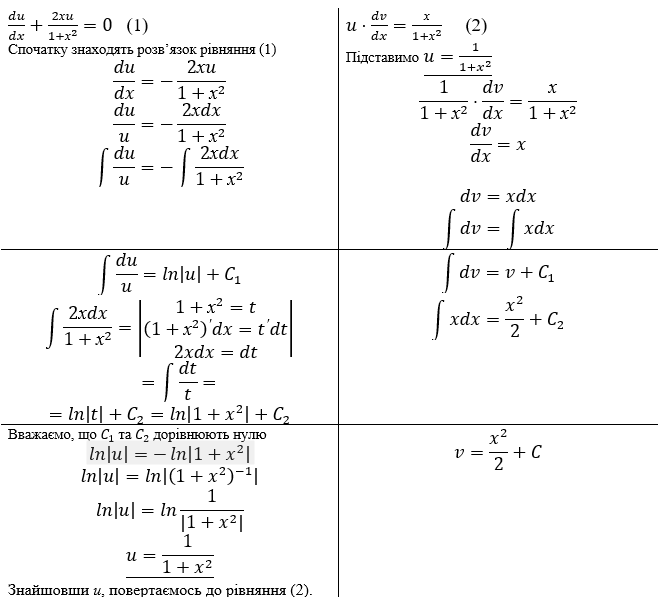
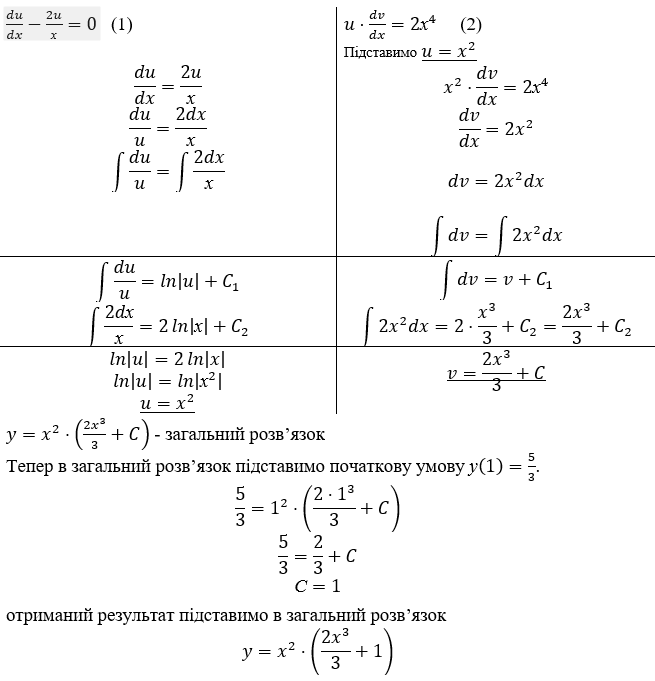

Тема. Лінійні рівняння першого порядку
Диференціальне рівняння типу
\(y^\prime+p\left(x\right)y=q\left(x\right)\) (1)
називають лінійним диференціальним рівнянням першого порядку.
Знаходження загального розв’язку лінійного диференціального рівняння першого порядку (1) зводиться до розв’язку двох диференціальних рівнянь з відокремлюваними змінними за допомогою підстановки:
\(y=uv\), (2)
де u і v – невідомі функції від х, кожна з яких має похідну. Одну з цих функцій можна вибрати довільно, друга має бути означена так, щоб функція (2) була розв’язком рівняння (1).
З (2) знаходимо
\(y^\prime=\frac{dy}{dx}=u\frac{dv}{dx}+v\frac{du}{dx}\). (3)
Підставив значення у та в рівняння (1), отримаємо
\(u\frac{dv}{dx}+v\frac{du}{dx}+p\left(x\right)uv=q\left(x\right)\),
або \(u\frac{dv}{dx}+v\left(\frac{du}{dx}+p\left(x\right)u\right)=q\left(x\right)\). (4)
так як шукана функція у підстановкою (2) представлена у вигляді добутку двох функцій, то одну з них, наприклад и, можемо вибрати довільно, крім \(u=0\). Виберемо функцію и так, щоб
\(\frac{du}{dx}+p\left(x\right)u=0\). (5)
Розв’язуючи отримане рівняння як рівняння з відокремлюваними змінними, знаходимо функцію
\(u^*=e^{-\int{p\left(x\right)dx}}\).
Так як функція \(u^*\) є розв’язком рівняння (5), то підставивши її до рівняння (4) отримаємо
\(u^*\frac{dv}{dx}=q\left(x\right)\), тобто \(dv=\frac{q\left(x\right)}{u^*\left(x\right)}dx\). (6)
Розв’язавши рівняння (6) як рівняння з відокремленими змінними, в якому \(u^*\) відома, знайдемо \(v=v\left(x,С\right)\) функцію , що містить довільну сталу С і є загальним розв’язком рівняння (6).
Замінивши в рівності \(y=uv\) функції u і v знайденими значеннями, отримаємо розв’язок
\(y=u^*\left(x\right)\cdot v\left(x,С\right)\)
рівняння (1).
Деталі, пов’язані із застосуванням цього методу (метода Бернуллі), з’ясуємо на наступних прикладах.
Приклад 1. Знайти загальний розв’язок диференціального рівняння
\(y^\prime-3y=е^{2х}\).
Розв`язок.
Розділимо рівняння на \(1+х^2\), щоб рівняння мало вигляд як рівняння (1).
\(y^\prime+\frac{2хy}{1+х^2}=\frac{х}{1+х^2}\),
Підстановка: \(y=u\cdot v,\) тоді \(y^\prime=u\cdot\frac{dv}{dx}+v\cdot\frac{du}{dx}\).
\(u\cdot\frac{dv}{dx}+v\cdot\frac{du}{dx}+\frac{2хuv}{1+х^2}=\frac{х}{1+х^2}\)
Винесемо \(v\) з другого та третього доданків за дужку
\(u\cdot\frac{dv}{dx}+v\left(\frac{du}{dx}+\frac{2хu}{1+х^2}\right)=\frac{х}{1+х^2}\)
Прирівнявши вираз у дужках до нуля, отримаємо два диференціальні рівняння з відокремлюваними змінними

Повертаючись до підстановки, отримаємо
\(y=\frac{1}{1+x^2}\cdot\left(\frac{x^2}{2}+C\right)\)
Відповідь: \(y=\frac{1}{1+x^2}\cdot\left(\frac{x^2}{2}+C\right)\).
Приклад 2. Знайти частинний розв’язок диференціального рівняння
\(y^\prime-\frac{2y}{х}=2х^4\), \(у\left(1\right)=\frac{5}{3}\)
Розв`язок.
Знайдемо спочатку загальний розв’язок диференціального рівняння.
Підстановка: \(y=u\cdot v,\) тоді \(y^\prime=u\cdot\frac{dv}{dx}+v\cdot\frac{du}{dx}\).
\(u\cdot\frac{dv}{dx}+v\cdot\frac{du}{dx}-\frac{2uv}{х}=2х^4\)
\(u\cdot\frac{dv}{dx}+v\left(\frac{du}{dx}-\frac{2u}{х}\right)=2х^4\)

Відповідь: \(y=x^2\cdot\left(\frac{2x^3}{3}+1\right)\).